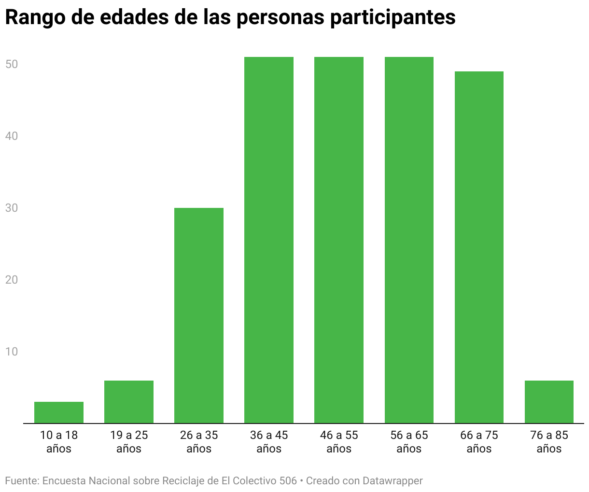

En este apartado nuestra intención es compartirle diferentes materiales para que usted se pueda educar y tomar conciencia.
En este material la Dirección de Cambio Climático nos comparte guía del manejo correcto de los residuos para aquellos costarricenses que no saben" Dale click si quieres leer más.
En el siguiente material se nos cuenta acerca de un proyecto pedagógico llevado a cabo con reciclaje. Dale click si quieres leer más.
En este reporte se nos cuenta de un pequeño declive que ha sufrido el país con respecto al reciclaje. Dale click si quieres leer más.

Se nos muestra los rango de edades que más suelen reciclar. Créditos del gráfico.